화학공정계산 (murphy) 6장:공정에너지 계산과 에너지 흐름도 설계
에너지의 형태는 총 3가지가 존재한다.
에너지=내부에너지+위치에너지+운동에너지
E=U+Ek+Ep
사실 이 세상에 존재하는 모든 에너지는 운동에너지와 위치에너지이다. 내부에너지는 내부 분자의 운동+위치에너지이다.
또한 엔탈피 H라고 하는 유용한 상태량을 정의할 수 있다.
H=U+PV
내부에너지와 엔탈피는 압력P, 온도T, 상 Φ , 조성xi의 함수이다.
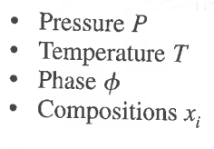
주어진 P, T, Φ, x에 대해 U^, H^ 값을 어떻게 구하는 지 알아볼 것이다.
1) U^, H^ 값을 구하기 위한 표와 그래프의 사용
먼저 물과 같은 순수 화합물이 있는데, 이러한 순수 화합물의 경우Φ=액체 or 고체, x=1이고 P,T에 따라 U^와 H^ 값이 달라진다.
이러한 경우 자료를 조사하여 표로 만들어 놓은 게 있다. 이것이 증기표이다.
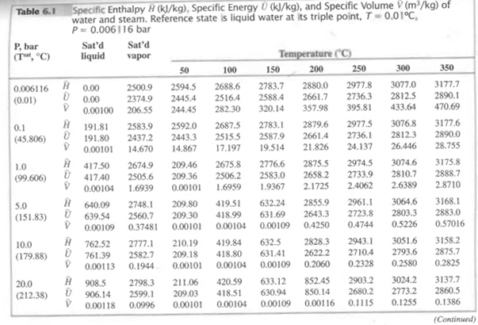
이 경우 주어진 온도와 압력에서 데이터를 읽기만 하면 쉽게 내부에너지와 엔탈피를 구할 수 있다.
2)모델식의 사용
그러나 아쉽게도 혼합물의 표나 데이터가 주어진 경우는 매우 드물다. 이러한 경우에, P, T, Φ, x 중 나머지 3 조건이 고정되었다고 가정하고 한 가지 상황이 변할 때 U^와 H^를 계산할 수 있는 모델식이 개발되어 있다.
2-1)P 변화시 ΔU, ΔH는?
이상기체일 경우
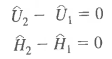
고체나 액체일 경우
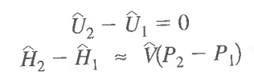
2-2)T 변화시 ΔU, ΔH는?
상변화가 없다는 조건하에
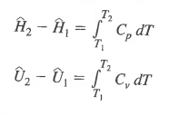
이때 Cp는 다항식 형태로 주어지며 표를 통해 구할 수 있다.
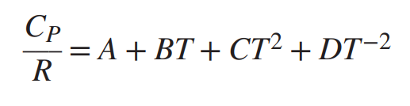 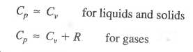 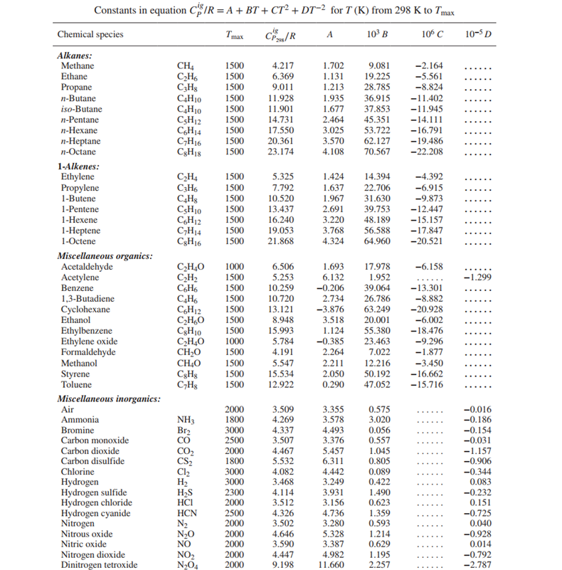
2-3) Φ변화시 ΔU, ΔH는? = 잠열
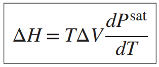
clapeyron 방정식이다. 이를 통해 잠열을 계산할 수 있다. 만약 이러한 식을 적용할 자료가 충분치 않다면
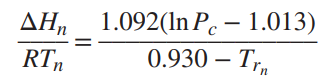
위의 식을 적용해본다.
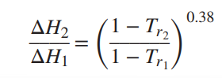
한 온도에서 순수한 액체의 증발 잠열을 알고 그 값으로부터 다른 온도에서 증발잠열을 추정할 수 있는 식이다.
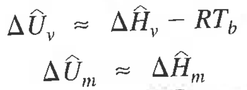
2-4) x변화시 ΔU, ΔH는? = 조성변화(혼합과 용액, 화학반응)
혼합으로 엔탈피가 변화하는 경우가 있고 화학반응으로 인해 엔탈피가 변화하는 경우가 있다.
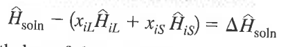 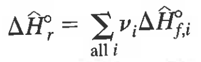
P, T, Φ, x 변화에 따른 ΔU, ΔH를 계산하는 법
1) P, T, Φ의 편리한 참고 상태를 선택한다.
2)참고 상태에서 U나 H가 0이 되게 한다.
3)P 변화에 의한 ΔU, ΔH를 계산한다.
4)T 변화에 의한 ΔU, ΔH를 계산한다.
5)Φ 변화에 의한 ΔU, ΔH를 계산한다.
어떠한 편리한 순서대로 3 4 5를 결합하고 다 더한다.
이때 조심할 것은 조성의 변화(혼합 또는 화학반응)으로 인한 엔탈피 변화이다. P, T, Φ의 경우 다른 조건의 영향을 받지 않지만 조성이 변화하는 경우에는 P=1atm ,T=25°C 인 상태에서 엔탈피 변화를 추정할 수 있다.
따라서 조성의 변화가 수반되는 경우 P=1atm ,T=25°C으로 가는 경로를 만들고 이후 엔탈피 변화 후 다시 원래 상태로 돌아가는 과정을 거쳐야 한다.
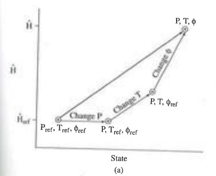
예제)다음 반응이 500도 1기압에서 일어날때 반응 엔탈피는??
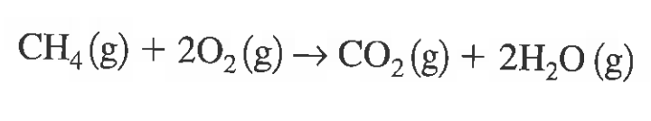
풀이:엔탈피 변화는 오직 조성변화에 의해서만 수반된다. 따라서 경로를 다음과 같이 설정한다.
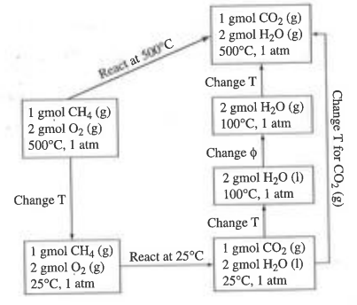
정리)
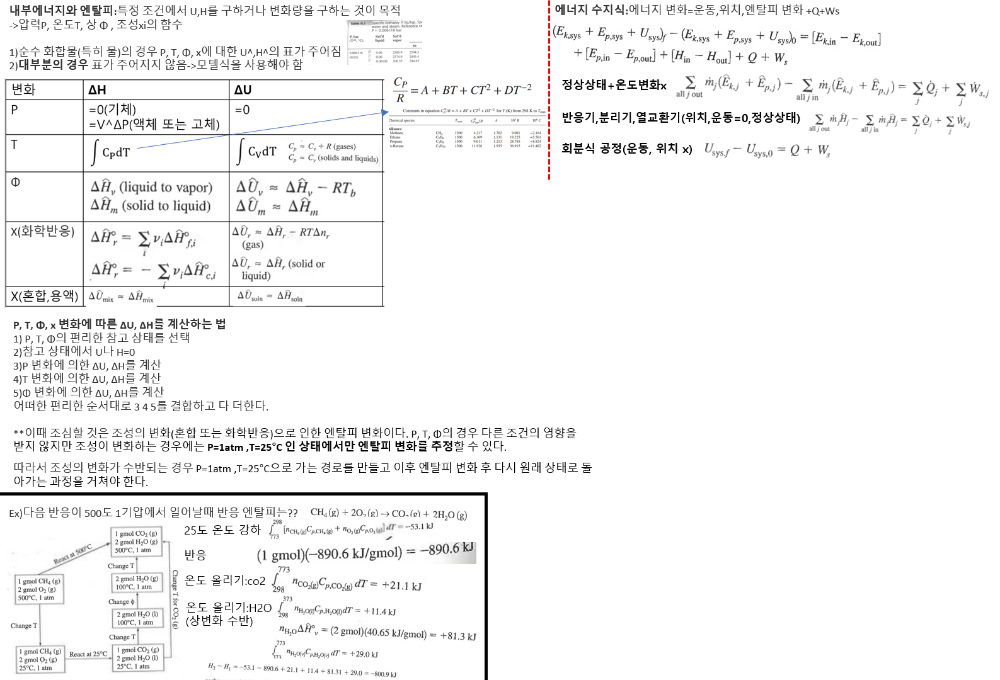